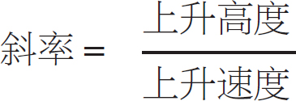
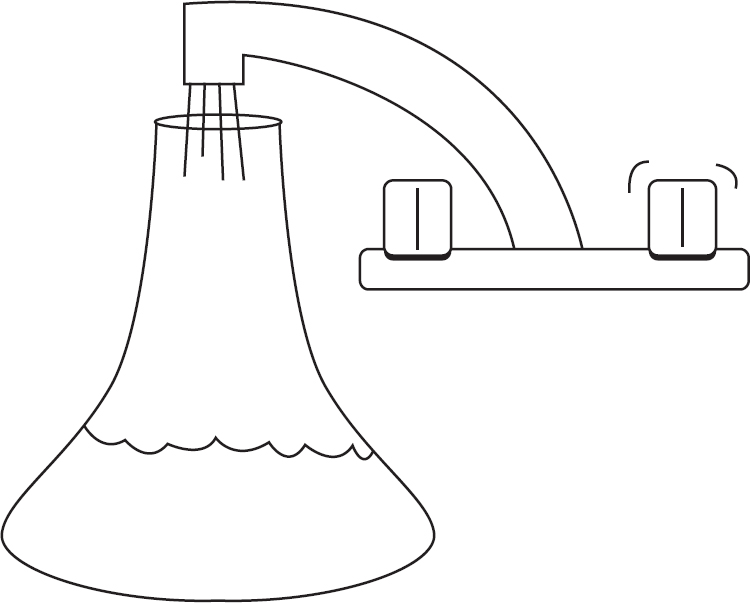
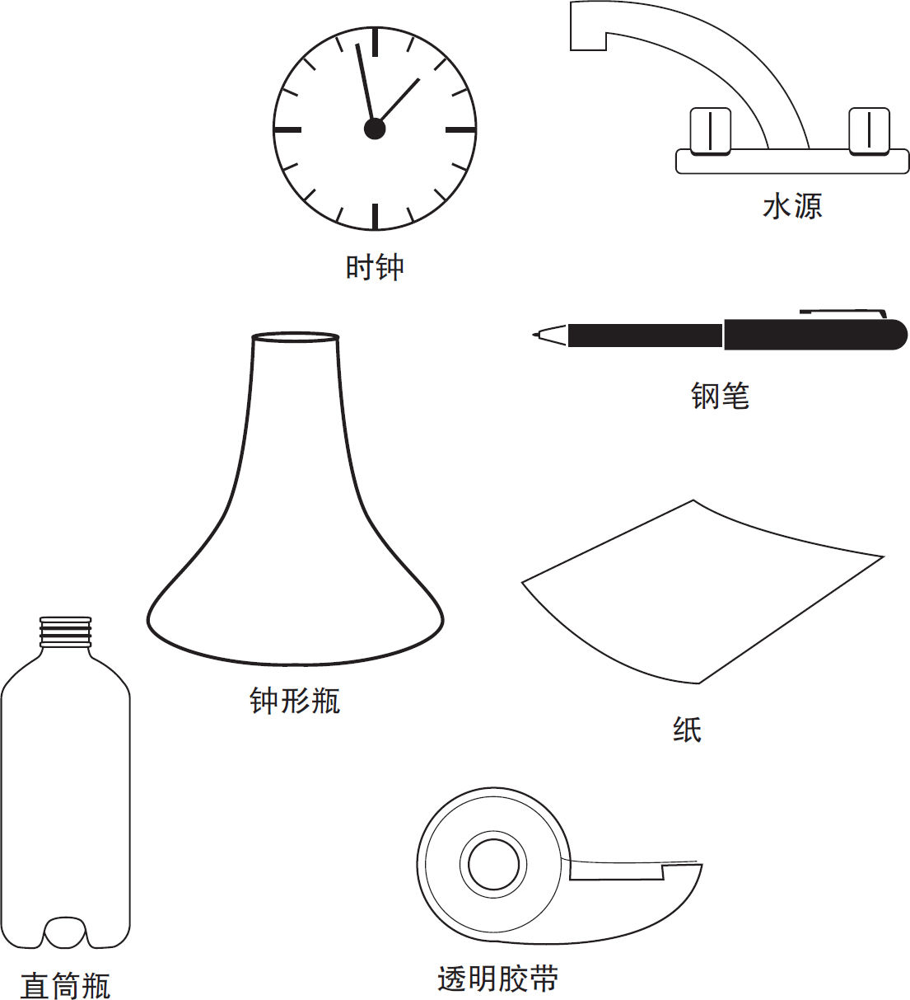
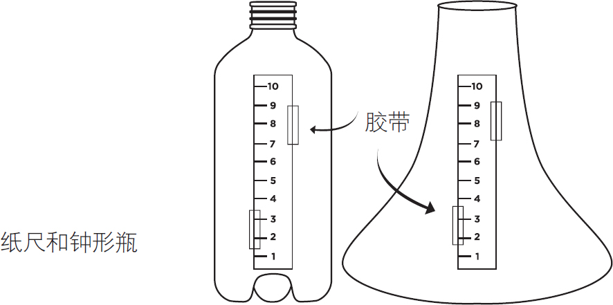
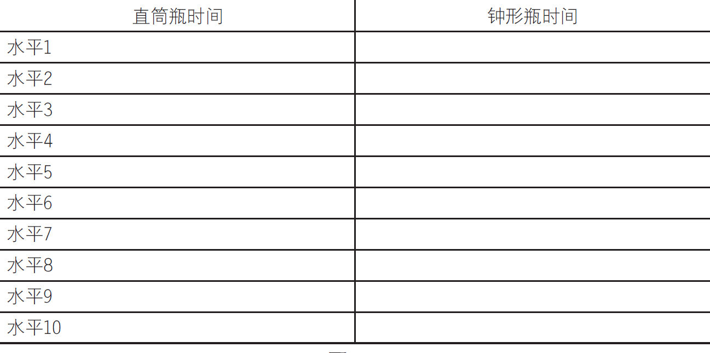
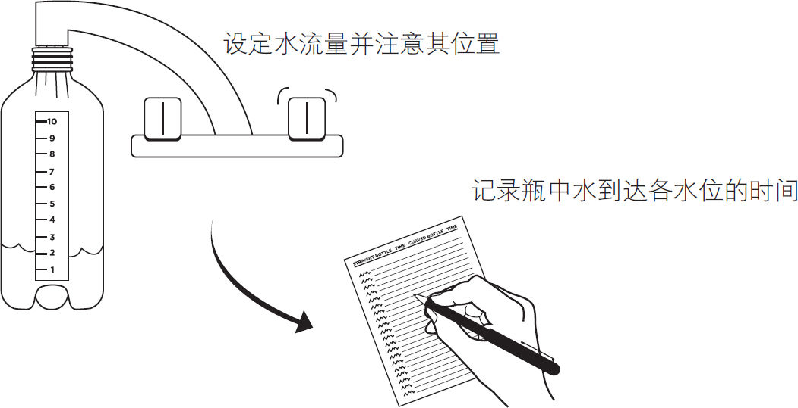
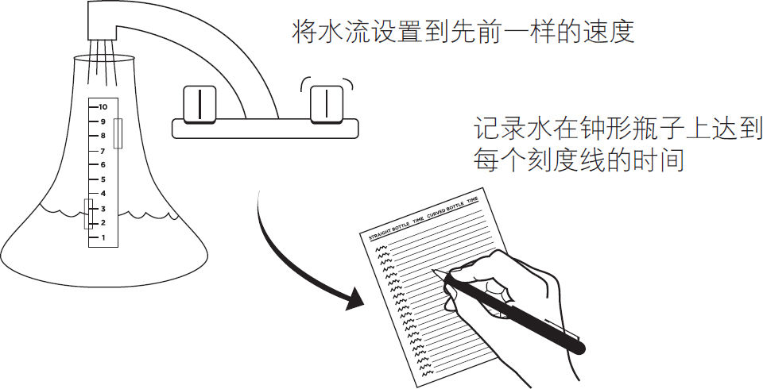
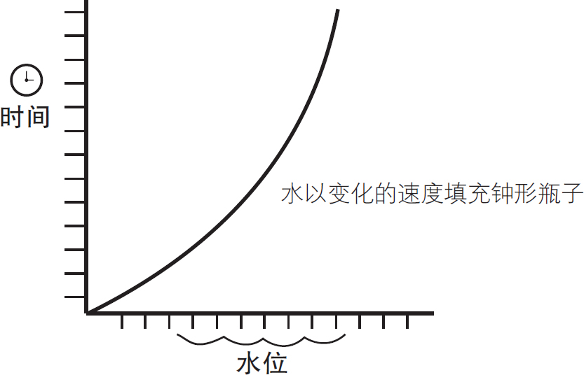
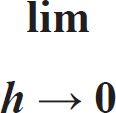

图4-1
■微积分是关于“变化”的数学。
它由微分学和积分学两个分支组成。下面一节将介绍微分学的基本原理。用微分法可以计算不断变化的事物的变化率，如速率、增长率或体积水平。
■以稳定的充水速度确定圆柱体容器的水位高度是很容易的。你也可以用代数斜率公式计算任意时间的水位高度：

■求弧形瓶水位的变化率需要用微积分。

下面的实验提供了一个简单的方法来证明，为什么计算变化率需要用到微积分。
需要准备的东西
►直筒瓶
►钟形瓶
►纸
►钢笔
►水源
►时钟
►透明胶带

制作
首先，用纸剪出18厘米长、3厘米宽的纸条，并在纸条上标上刻度，见图4-1。
图4-1
将纸条粘贴到两个瓶子上，并保持高度一致，然后用透明胶带把它们固定起来，如图4-2所示。

图4-2
接下来，画一个直筒瓶和钟形瓶的对比图表，如图4-3所示。

图4-3
注意：你可能需要与朋友一起来完成这个项目。你们其中的一个人负责往瓶子里注水，当水位达到一定的高度时告诉另一个人，让他可以在图表中记录水位到达的时间。
首先，把水龙头调到一个固定的位置，放出缓慢而稳定的水流。标记水龙头的位置，这样下次你就可以放出同样大小的水流。将秒表设置为零或等到下一分钟开始，把直筒瓶放在水龙头下面，如图4-4所示。

图4-4
记下水位到达纸带上的每一刻度线的时间直到瓶子满了为止。另外你还可以创建一个图表来说明结果，如图4-5所示。

图4-5
接下来，将秒表重置为零，或者等到你手表的下一分钟开始时，把弧形瓶放在水龙头下面，如图4-6所示。记下水位到达纸带的每一刻度线的时间，直到水充满瓶子。

图4-6
尽管瓶子的容积相同，水也以同样的速度注入，但直筒瓶的水位高度是可以预测的，而对于弧形瓶子来说，水位高度是不可预测的。之所以这样是因为弧形瓶的底部较宽而顶部较窄，见图4-7。

图4-7
你还可以将结果绘制为图表展示出来。
■变化率在曲线图上表现为曲线，通过求解曲线切线的斜率你可以确定某个点的瞬时变化率。
■当两点间距离足够小时，曲线就近似为直线。曲线上的第一点无限趋向第二点，但不与之重合，这样就可以近似计算曲线上单点的斜率了，极限表示两个点距离无限接近0而不为0。（因为你不能除以零。）
■极限像门吸一样，保持门无限接近但不能接触到墙壁。符号如下所示：

它表明变量h 可以无限接近但总达不到零。